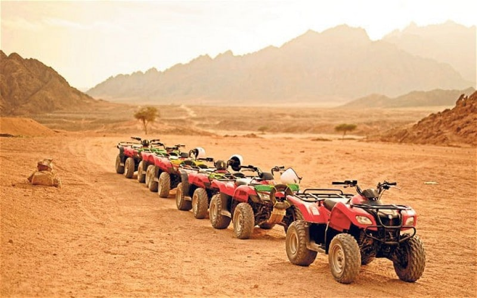

|
 |
Mix safari in Sharm El Sheikh is an enjoyable trip for two people, allowing you to experience many things at the same time, firstly driving a motorcycle for an hour, secondly riding a camel for 30 minutes, thirdly drinking Bedouin tea with a delicious taste in the Bedouin tent, fourthly driving a car buggy for an hour, with Enjoy the picturesque mountain views at sunrise or sunset.
There are several dates to pick you up from the hotel and the beginning of the trip, and the best of these dates are: 3:30 in the morning, 3:00 in the afternoon, 5:00 in the evening, because in these times the weather is moderate with the possibility of watching the sunrise or sunset in the desert amidst the views of the mountains and Picturesque hills with the possibility to take many wonderful pictures. You will be taken from the hotel in an air-conditioned bus and head to the motorcycle center in the desert, where they will explain to you how to drive motorcycles and the car buggy, which are two buttons (a button for petrol and a button for brakes) with an explanation of all the instructions that must be adhered to, after that you will start your journey first by driving the motorcycle In the desert for an hour with photo stops, secondly a camel ride for 30 minutes, thirdly drinking Bedouin tea in the Bedouin tent, fourthly and finally driving the car buggy in the desert for an hour and returning to the motorcycle center and then by bus to the hotel.
If you want to drive motorcycles only, then you have a motorcycle safari trip, but if you want to drive the car buggy only, you can book a car buggy safari, but if you want to know more about life in the desert and the life of the Bedouins with dinner in the desert and watching various entertainment programs, then you have two super safari trips Motorcycles or a super safari car buggy, but if you want to learn about life in the desert with dinner and watching various entertainment programs and not driving anything, then you have a Bedouin dinner trip.. |